Tutorial & Docs
arKit
Arkit es la nueva libreria de realidad aumentada liberada para el desarrollo por Apple y de la que ya hemos hecho algun prototipo para testar rendimiento, capacidades y funcionalidades.
Primeras pruebas con nuestro "museo en la calle"
Esta nueva libreria consigue una alta precision en el posicionamiento y tracking de los elementos basandose en dos tecnologias:
Vision artificial: gracias a la tecnologia de vision artificial es capaz a traves de la camara del movil de detectar en el entorno superficio¡es horizontales (mesas, suelo...) sobre los que permite ubicar los modelos en realidad aumentada.
En principio solo permite ubicar los modelos en superficies horizontales y con orientacion obviamente horizontal. Esto supone una limitacion si existen casos en los que nos interesase ubicarlos en planos verticales (colgando de una pared, por ejemplo).
VIO (visual inertial odometry):
En cuanto al posicionamiento, utilizan de una forma muy inteligente tecnicas muy antiguas. El llamado visual inertial odometry en pocas palabras consiste en analizar la imagen en busca de aristas que le sirvan de referencia para seguir su movimiento, de esta forma el dispositivo sabe en que direccion se ha producido el movimiento y en que medida.
Este sistema ofrece una gran precision pero tiene un problema, que es el efecto Blur de las camaras. Cuando se mueve la cámara muy rapido la imagen se distorsiona y las aristas se difuminan, y si el dispositivo pierde durante más de dos frames esas aristas, pierde la referencia. Por eso este sistema lo han combinado con la informacion obtenida de los propios giroscopio y acelerometro del móvil, que tambien es una técnica ya anticuada pero que en este caso funciona muy bien al estar especificamente calibrado para el particular de sus dispositivos.
Ejemplo de como funciona el sistema VIO.
Sistema de medición de entornos reales utilizando AR.
Requisitos
IOS 11 beta
La nueva libreria de Apple precisa de un dispositivo que monte los nuevos chipset X9 o X10 para poder funcionar, estos son los dispositivos a dia de hoy que disponen de ese chipset y por lo tanto son compatibles:
Dispositivos compatibles:
- Iphone 6s.
- Iphone 6s plus.
- Iphone 7 y 7plus.
- Ipad Pro 2017.
Si tu dispositivo Apple cumple con las especificaciones, necesitas descargar aqui la actualización de IOS 11 Beta, si tu ID de Apple no es de desarrollador no te aparecera en la lista de descargas.
Xcode9Beta2
Para poder desarrollar un proyecto basado en ArKit necesitareis tambien instalar la Beta 9 de Xcode, que podeis instalar desde aqui. Por suerte en este caso no es necesaria la ID de desarrollador para poder descargarlo e instalarlo..
Unity 5.6.1p2
Solo es compatible con ArKit las versiones de Unity iguales o superiores a la 5.6, aunque de momento recomiendan en especifico la version 5.6.1p1.
ArKit SDK
Se puede descargar o bien desde el propio Asset Store de Unity o directamente desde la seccion developer de Apple.
Escena básica
-
Descargar Unity ArKit Plugin desde el Asset Store.
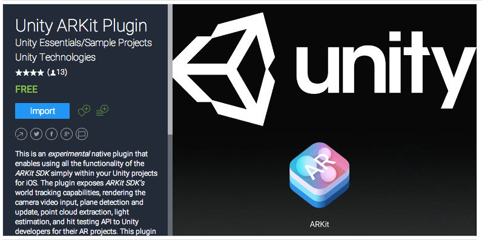Se recomienda importarlo en un proyecto nuevo porque ya es proyecto completo en si y borrará cualquier modificacion hecha hasta entonces.
-
Con la escena vacia, hay que añadir a la camara principal los componentes "Unity AR video", que se encarga de controlar y manejar los datos del VIO y los sensores, y "Unity AR camera Near Far" con el que se controla el Fov de la cámara en el entorno virtual.
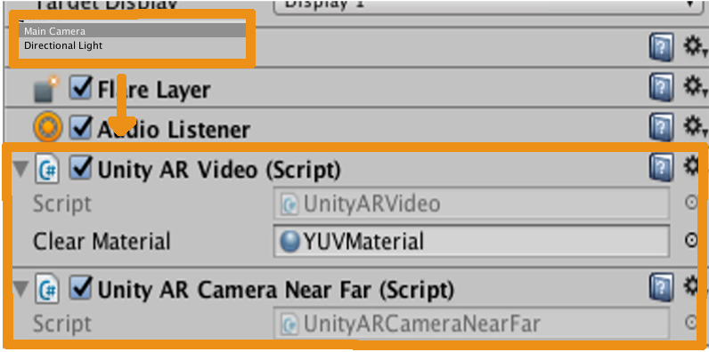Estos componentes no vienen con parametros de configuracion. Si en algún caso concreto interesa cambiar alguna de las variables por defecto, hay que hacerlo directamente sobre el Script.
-
Añadir a la escena un objeto vacio, añadirle el componente "Unity AR Camera Manager". Este componente necesita como parametro indicarle cual es la camara principal.
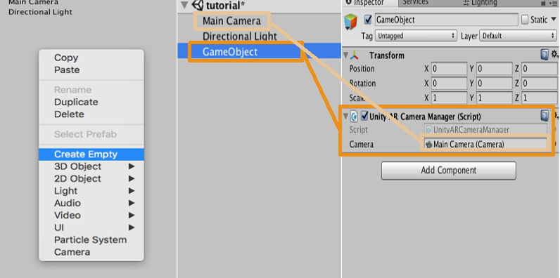Este componente se encarga de comunicarle a los objetos de la escena los datos recogidos por la cámara.
-
Añadir un nuevo objeto vacío en la escena, que servira de contenedor a todos aquellos modelos 3D que luego vayamos a insertar en el "mundo real".
-
Añadimos el modelo que querámos dentro del objeto vacio creado anteriormente y le añadimos el componente "Unity AR Hit Test Example". Este componente necesita un gameObject como parametro, que sera el propio padre que usamos como contenedor y nos sirve para poder ubicar el modelo en el entorno real.
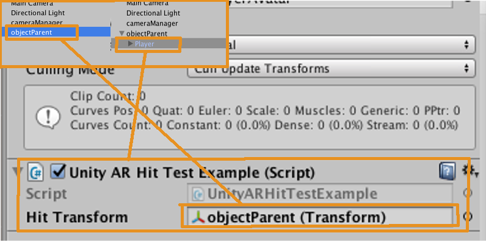 -
Con esto tenemos una escenar básica con arKit en el que podemos encender la cámara, y fijar el modelo e un punto que toquemos en la pantalla. pero hay que tener en cuenta algunas consideraciones:
- Todos los objetos, tanto la camara como el objeto padre o los objetos hijos dentro de el, se recomienda que partan del punto (0, 0, 0) para facilitarle los calculos de posicionamiento al VIO.
- Si quieres redimensionar el modelo 3D, siempre hay que hacerlo redimensionando el propio modelo desde un programa de modelado externo para que padre e hijo dentro de Unity mantengan la proporcion (0.1, 0.1, 0.1) y (1, 1, 1) respectivamente.
Hit Controller
Aunque en el tutorial previo ya se explica como añadir este componente al modelo para luego poder ubicarlo en el entorno, cabe estenderse sobre el para hablar de una serie de consideraciones.
Como ya comentamos, este componente nos sirve para que al tocar la pantalla del dispositivo, el modelo virtual se quede fijado en el plano horizontal que haya detectado en el area en la que hemos tocado y asi, una vez fijado, podamos ya arcercarnos a el o redearlo y que se mantenga en su sitio.
El problema con este componente es que "acapara" todos los eventos touch en pantalla. Lo que quiere decir que si quisiesemos, por ejemplo, tener un menu en pantalla con botones con los que interactuar, al pulsar uno de esos botones el componente entendera que estamos queriendo reubicar el modelo, y resulta un poco incomodo.
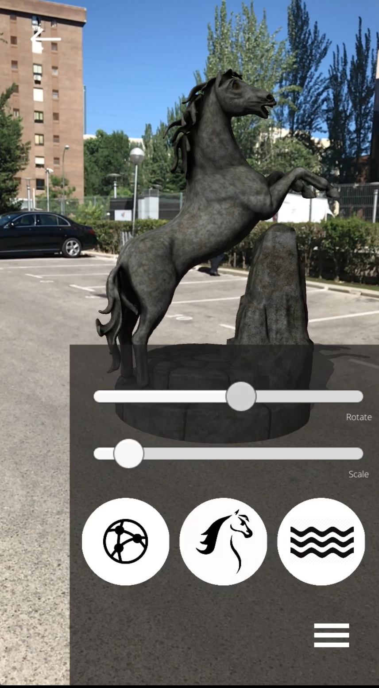En la imagen, se ve como tenemos un menu con el que queremos interactuar sin que el componente entienda que tambien estamos queriendo reubicar el modelo, y para eso tenemos que introducir algunos cambios en el propio script del componente "Unity AR Hit Test Example".
using System;
using System.Collections.Generic;
using UnityEngine.EventSystems;
namespace UnityEngine.XR.iOS
{
public class UnityARHitTestExample : MonoBehaviour
{
public Transform m_HitTransform;
bool HitTestWithResultType (ARPoint point, ARHitTestResultType resultTypes)
{
List hitResults = UnityARSessionNativeInterface.GetARSessionNativeInterface ().HitTest (point, resultTypes);
if (hitResults.Count > 0) {
foreach (var hitResult in hitResults) {
Debug.Log ("Got hit!");
m_HitTransform.position = UnityARMatrixOps.GetPosition (hitResult.worldTransform);
m_HitTransform.rotation = UnityARMatrixOps.GetRotation (hitResult.worldTransform);
Debug.Log (string.Format ("x:{0:0.######} y:{1:0.######} z:{2:0.######}", m_HitTransform.position.x, m_HitTransform.position.y, m_HitTransform.position.z));
return true;
}
}
return false;
}
// Update is called once per frame
void Update () {
if (Input.touchCount > 0 && m_HitTransform != null)
{
var touch = Input.GetTouch(0);
if (touch.phase == TouchPhase.Began && !EventSystem.current.IsPointerOverGameObject(0))
{
var screenPosition = Camera.main.ScreenToViewportPoint(touch.position);
ARPoint point = new ARPoint {
x = screenPosition.x,
y = screenPosition.y
};
// prioritize reults types
ARHitTestResultType[] resultTypes = {
ARHitTestResultType.ARHitTestResultTypeExistingPlaneUsingExtent,
// if you want to use infinite planes use this:
//ARHitTestResultType.ARHitTestResultTypeExistingPlane,
ARHitTestResultType.ARHitTestResultTypeHorizontalPlane,
ARHitTestResultType.ARHitTestResultTypeFeaturePoint
};
foreach (ARHitTestResultType resultType in resultTypes)
{
if (HitTestWithResultType (point, resultType))
{
return;
}
}
}
}
}
}
}
Aqui os dejo el Script ya modificado. Básicamente he añadido una excepción al evento touch.phase == TouchPhase.Began de la funcion Update() para indicar que solo debe ejecutarse en caso de que en la zona de la pantalla que estemos tocando no haya ya un elemento introducido por nosotros (!EventSystem.current.IsPointerOverGameObject(0)).
Shadow Plane
Por defecto, los modelos no proyectan sombras en el entorno real, un recurso que mejora considerablemente la integracion. Pero ARKit dispone de un componente con el que poder añadir este efecto.
Para recurrir a el, simplemente hay que añadir un objeto vacio a la escena, y a este añadirle el componente "Unity AR Generate Plane".Este componente recibe como parametro un gameObject que segun lo que deseemos puede servir para calcular el ambient occlusion, para generar un plano Debug que te informa de las superficies horizontales que esta detectando, etc.
En este caso lo que nos interesa es generar sombras por lo que le pasaremos el Prefab ShadowPlanePrefab que el arKit ya tiene preparado para este propósito.
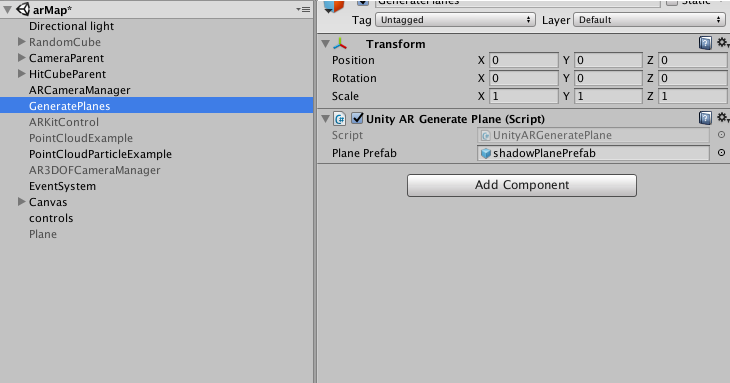
hay que tener en cuenta que la escena solo acepta un componente "Unity AR Generate Plane" dedicado a generacion de elementos, por lo que si ponemos varios solo se hará efectivo el primero en la jerarquia.
ArKit + MapBox
Instalación y requisitos
El SDK de MapBox se descarga directamente desde la pagina oficial de MapBox. Una vez descargado se importa en nuestro proyecto como un new package y podremos observar que en la barra de Menu superior nos ha aparecido la opción MapBox.
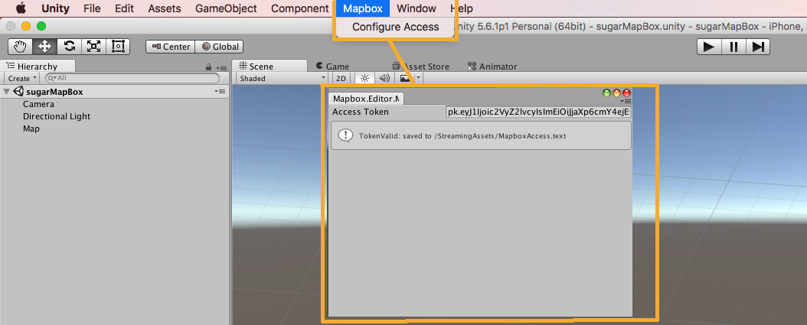
Si pulsamos sobre Configure Acces nos abrira el cuadro de dialogo donde debemos introducir el Acces Token que MapBox nos facilita cuando nos damos de alta en su sistema.
Mapa básico
-
Lo primero que hay que hacer es crear nuestro visualizador de mapas. Para ello vamos a crear una carpeta vacia en Project donde luego crearemos todos los componentes que necesitemos.
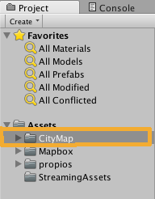Como hemos dicho, en este directorio vacio es donde crearemos todos los componentes de nuestro mapa, y el primero de ellos es el MapVisualization, asi que dentro de la carpeta hacemos click derecho > Create > MapBox > MapVisualization.
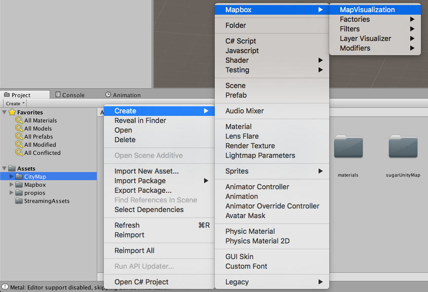Despues de instalar el SDK de MapBox y haber configurado correctamente el Acces Token, se puede observar como ha aparecido la opcion MabBox en el menu contextual Create. Si no apareciese quiere decir que la instalacion no fue correcta.
-
MapVisualization hace las veces de "controlador" de todas las Factories que vayamos creando. Y la primera que necesitamos es una que nos genere el terreno sobre el que se va a pintar el mapa. Asi que dentro de la carpeta CityMap creamos una nueva carpeta que llamaremos CityTerrain y dentro de esta a su vez crearemos el componente Terrain Factory.
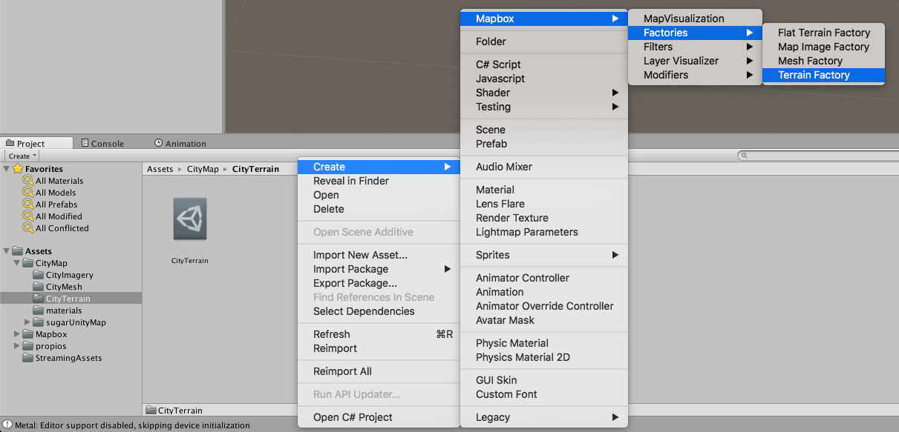Este Factory necesita una serie de parametros de configuracion, pero de momento lo dejaremos todo por defecto excepto que activaremos la casilla Add Collider y como opcional, podemos inyectarle un material a nuestro gusto, porque el material por defecto tiene demasiados brillos.
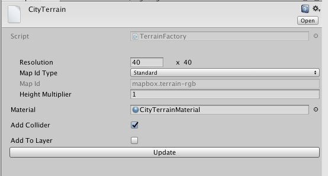 -
Una vez tenemos el terreno, necesitamos la textura del mapa para impromirlo sobre este, para ello, comom hicimos con el MapTerrain crearemos una nueva carpeta dentro de CityMap a la que llamaremos CityImagery y dentro de esta a su vez crearemos un Map Image Factory.
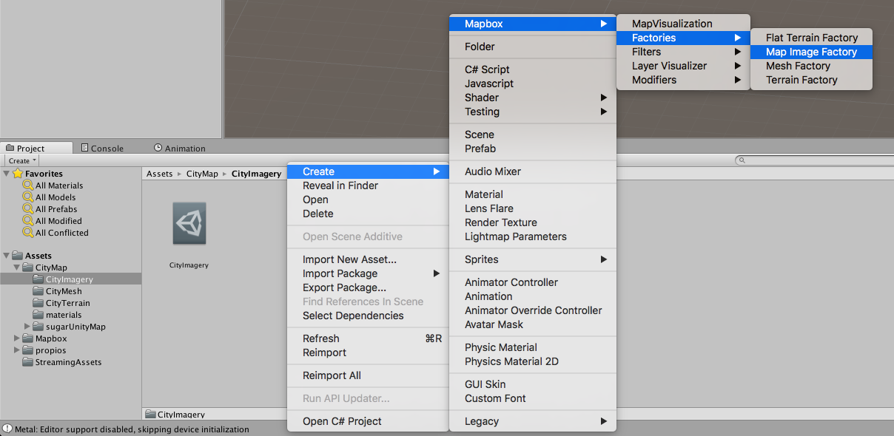Este Factory necesita una serie de parametros de configuracion, pero de momento solo cambiaremos el parametro "Style", con el que elegiremos la estetica de nuestro mapa
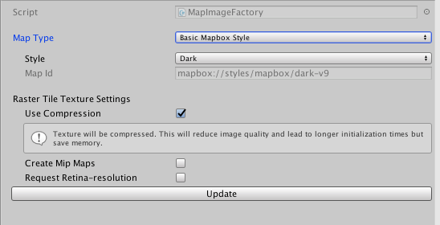 -
Con estos componentes creados, los inyectaremos en nuesto MapVisualizer para que se encarge de gestionarlo. para ello seleccionamos el componente y en el inspector le indicamos que nuestro "controller" manejara dos Factory.
Al hacerlo se nos ampliara la lista con dos lineas que esperan dos componentes como parametro y aqui le añadiremos a cada linea nuestros componentes CityTerrain y CityImagery que acabamos de crear. Evidentemente, con cada Factory nuevo que creemos, añadiremos en MapVisualizer una nueva linea para integrarlo si nos interesa.

-
una vez todos los Factory creados y configurados, ya podemos generar en la escena un mapa sencillo, por lo que vamos a incluirlo para probarlo. Para ello creamos un objeto vacio en la escena que llamaremos Map y le añadiremos el componente "Abstract Map" y "Range Tile Provider".
En el componente RangeTileProvider, simplemente indicaremos que queremos un map con las proporciones todas a 1.
En el componente AbstractMap, le pasaremos las coordenadas del mapa que deseamos, el zoom inicial de ese mapa y las opciones Tile Provider y Map visualizer esperan objetos como parametros.
En TileProvider, arrastraremos hasta su casilla el propio componente "Range Tile Provider".
En Mapvisualizer, seleccionaremos el componente MapVisualizer que hemos estado creando y configurando hasta ahora.
-
¡Ya esta listo!, ahora solo hay que darle al Play asegurandonos de que el mapa entre dentro del campo de visión de la cámara y confirmar que esta todo correcto.
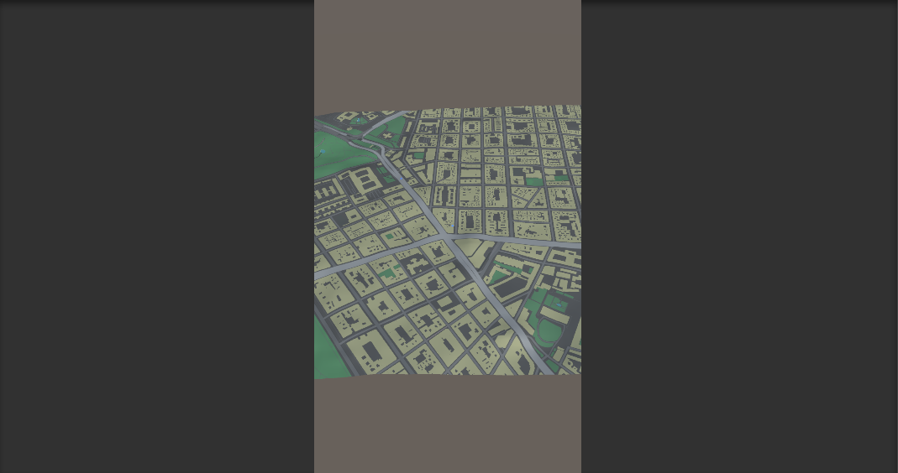 -
Ahora que sabemos que funciona y queremos integrarlo con ARKit, solo tenemos que meter en escena nuestro objeto de la misma manera que se explico en la Escena básica de ARKit, como si fuese un modelo 3D habitual.
Mesh Generator
proximamente.
Estilos
proximamente.
Input Data Map
proximamente.